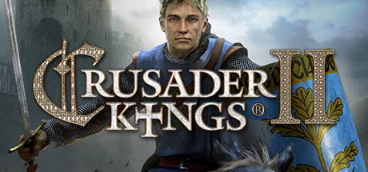
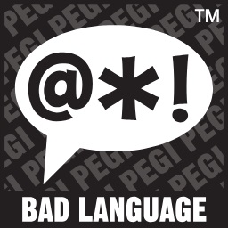
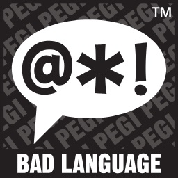
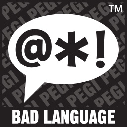

Crusader Kings II: Morczne Wieki

PLATFORMY
PC
------
------
------

Wiecej Zdj.
Kontynuacja wydanej w 2004 roku rozbudowanej gry strategicznej Crusader Kings, stanowiącej osadzoną w realiach średniowiecznych spin-offową odsłonę popularnej serii Europa Universalis, rozwijanej od ponad dekady przez studio Paradox. Crusader Kings II: Mroczne Wieki to kontynuacja popularnej gry strategicznej autorstwa szwedzkiego studia Paradox Interactive.
Podobnie jak pierwsza część tytuł ten stanowi adaptację mechanizmów zabawy znanych z serii Europa Universalis na potrzeby średniowiecznych realiów. Akcja gry rozpoczyna się w roku 1066 i pozwala graczom na wcielenie się w chrześcijańskiego szlachcica (hrabiego, księcia, cesarza lub króla), którego zadaniem będzie przeprowadzenie własnej dynastii przez chaotyczne czasy europejskiego średniowiecza. W porównaniu do pierwszej części wprowadzono oczywiście masę nowości znacząco uatrakcyjniających zabawę. W prowincjach obecni są teraz baronowie (albo nawet kilku w przypadku bogatych ziem), każdy z własną osobowością i ambicjami. Rozbudowa aspektu psychologicznego dotknęła zresztą wszystkich postaci, dzięki czemu nawet członek naszej rodziny jest zdolny wbić nam nóż w plecy. Rozszerzona została też rola kobiet. Zdarzyć się więc może, że wierny dotychczas wasal wypowie nam posłuszeństwo za namową swojej małżonki. Wszystko to sprawia, że jako władca tak do końca nie możemy ufać nikomu.
W tych ciężkich czasach nieocenioną pomocą okazuje się nadworny szpieg, który stara się zniweczyć spiski zawiązywane przeciwko jego panu. Doniesie nam o wszystkich krążących plotkach i wskaże tego, kto je rozsiewa. Możemy wtedy wezwać takiego delikwenta na audiencję i kazać mu trzymać język za zębami. Jeśli natomiast będziemy w mniej łaskawym nastroju, to wolno nam takich wywrotowców zamknąć w wieży, albo nawet skazać na śmierć, niezależnie od tego, czy byli tak naprawdę winni czy też nie.
Tak naprawdę rozgrywka opiera się właśnie na takich relacjach pomiędzy ludźmi zamieszkującymi świat gry. Znajduje to odbicie nawet w aspekcie militarnym, ponieważ wprowadzono rozbudowany system uzasadniania wojny. Wypowiedzenie jej bez solidnego powodu może się okazać fatalne w skutkach, jeśli nie posiadamy pełnego wsparcia szlachty. W grze o takim tytule nie mogło zabraknąć oczywiście również wypraw krzyżowych. Relacje z Kościołem zostały zresztą mocno rozbudowane i możemy nawet ustanawiać własnych antypapieży. Poza kampanią dla pojedynczego gracza dostępny jest również tryb multiplayer obsługujący do 32 graczy.
WYMAGANIA
Minimalne:
Brak informacji.
Rekomendowane:
Pentium 4 2.4 GHz, 2 GB RAM (3 GB RAM - Vista/7), karta grafiki 512 MB (GeForce 8800 lub lepsza), 2 GB HDD, Windows XP/Vista/7
Pentium 4 2.4 GHz, 2 GB RAM (3 GB RAM - Vista/7), karta grafiki 512 MB (GeForce 8800 lub lepsza), 2 GB HDD, Windows XP/Vista/7
Minimalne:
Brak informacji.
PEGI
 




Język Gry

PL napisy, EN napisy i dialogi